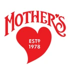

Retail and wholesale
Organizations managing margin, pricing, inventory and execution across stores, regions, categories and partners.

About Salient
Salient partners with organizations to align decisions, accountability and outcomes to drive productivity across the enterprise.
In complex organizations, performance depends on thousands of decisions made every day across job functions, teams and locations. Too often, those decisions are made with partial information, inconsistent definitions or data that isn’t trusted enough to guide meaningful action.
That challenge grows in importance as organizations bring AI into the way they operate. AI can only create value when it works from data that’s accurate, connected, normalized and validated, and that connects to the broader technology ecosystem.
Salient helps organizations build that platform. We align data, responsibility and outcomes so people, systems and AI-enabled tools can work from the same trusted understanding of the business.
Who we are
Salient is a process optimization partner built for organizations that operate at scale. We work with leaders and teams responsible for real outcomes in environments where static reporting won’t cut it, because decisions can’t wait.
For nearly four decades, Salient has helped organizations manage complexity by aligning data with how work actually gets done. Our work is grounded in a simple belief: performance improves when responsibility is clear, information is shared and people understand the impact of their actions.
Our solution brings together operationally aligned data, rapid exploration and trusted performance context so organizations can understand what’s happening, why it’s happening and where action can create value. The result is a system where improvement is built into the way teams work, not treated as a one-time initiative. That’s why our relationships are designed to last.
Performance improvement doesn’t happen by accident. It improves when organizations are intentional about how decisions are made, who owns the outcome and how progress is measured over time.
The people closest to the work are best positioned to see what’s happening and act on it. Organizations perform better when decision-making authority is accessible, not hierarchical.
Distributed decision-making only works when teams share a common understanding of success. Shared measures, transparent data and consistent definitions ensure autonomy doesn’t come at the expense of alignment.
Seeing what happened isn’t enough. Teams need to understand why performance changed, what influenced the outcome and where action creates value. Information without context leads to hesitation. Understanding creates momentum.
Trust is built when teams work from the same information and can trace outcomes back to real activity. The same is true in AI-enabled environments: if the data foundation isn’t validated, AI can’t reliably support decisions.
The value of technology comes from how well it supports the decisions, responsibilities and outcomes that shape performance.
Sustainable performance comes from systems designed to support learning, adjustment and accountability every day, not from one-time programs or periodic reviews.
Salient partners with organizations where performance depends on informed decisions made across teams, functions and locations.
Organizations managing margin, pricing, inventory and execution across stores, regions, categories and partners.

Brands, distributors and suppliers navigating complex routes to market, trade spend, execution variability and performance across partners.

Organizations operating in regulated, data-intensive environments where accountability, transparency and outcomes matter.

Since 1986
Salient was founded to align day-to-day decisions with organizational performance. The focus was never reporting for reporting’s sake. It was helping people understand the impact of their actions where work actually happens.
As organizations and their data grew more complex, Salient evolved to support industries operating at scale, from consumer goods and distribution to retail, healthcare and government, and beyond single-use applications to distributed decision-making.
We combine experience, perspective and modern technology, and help organizations create the trusted performance foundation that lets people, processes, systems and AI-enabled tools work from the same understanding of value.
Let’s move performance forward, together
Let’s explore what this means for your business.